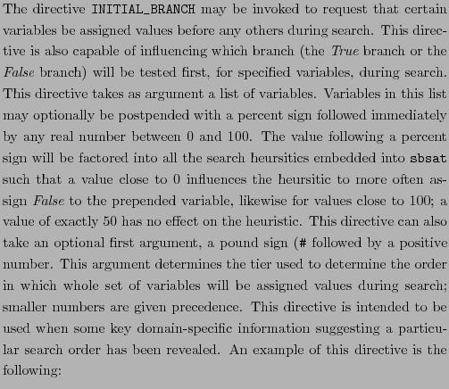
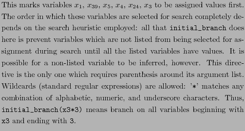
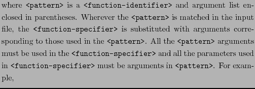
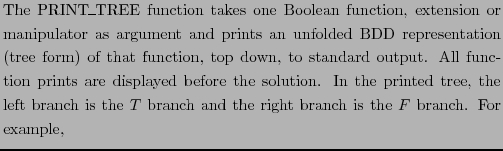
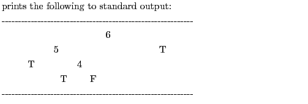
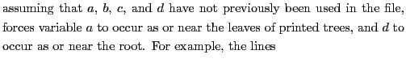
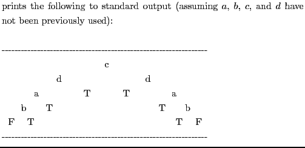
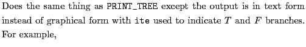
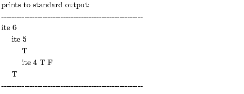
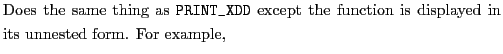

The syntax of a directive is
<command> ( <arg> ... )
where <arg> are Boolean functions or manipulators or variables.
The following are commands and a description of how they apply their
arguments.
INITIAL_BRANCH

initial_branch (x1, x39,
x5, x4, x24, x3)


initial_branch (#1, x1, x39%20.5, x5)
initial_branch (#2, x4, x24, x3%80.25)

#DEFINE
#define <pattern> # <Boolean-function>

#define slide(x1, x17, x15, x33, x40)
# equ(xor(x1, and(-x17, x33),ite(x15, or(x33, -x40), -x33)))
#define and(x, y, z) # or(x, y, z)
.
PRINT_TREE

print_tree(or(4, 5, -6))

ORDER

order(a, b, c, d)

order(b, a, d, c)
print_tree(minmax(1, 3, a, b, c, d))

PPRINT_TREE

pprint_tree(or(4, 5, -6))

PPRINT_XDD
print_xdd(or(4, 5, -6))
PPRINT_FLAT_XDD

print_flat_xdd(or(4, 5, -6))